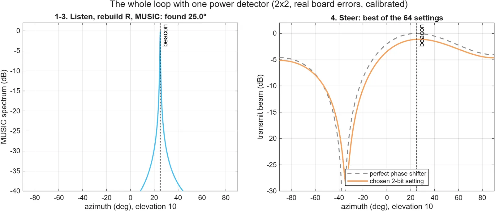
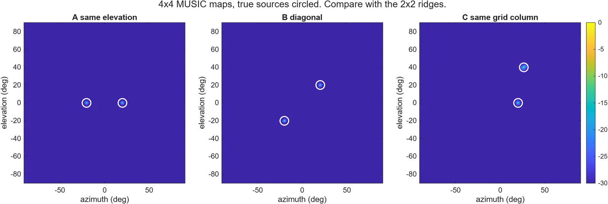
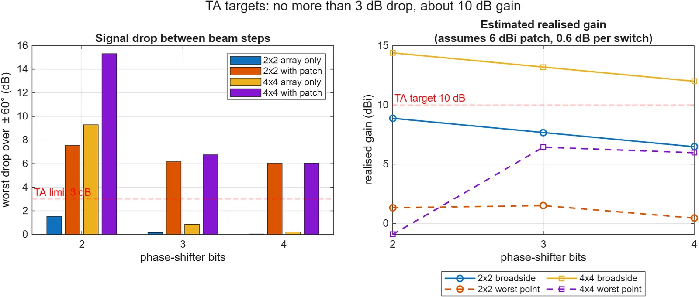
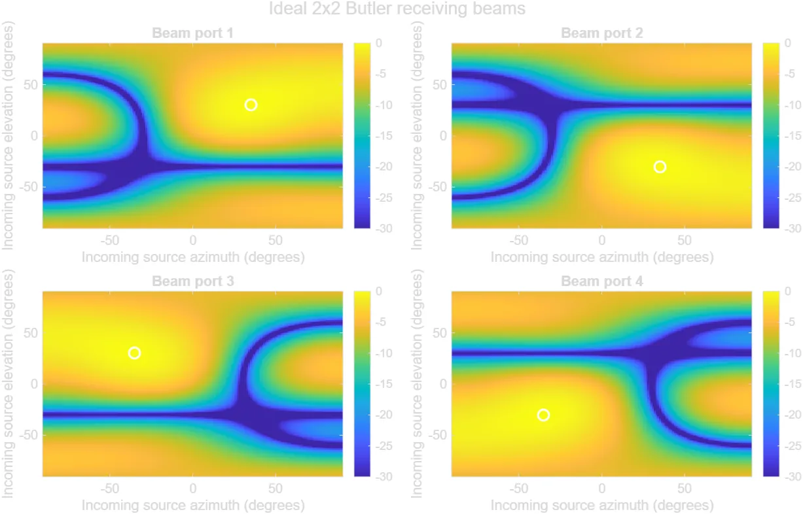

UT Dallas RIDE
RF direction finder and Butler matrix
A 5.8 GHz antenna array that finds where a signal comes from, then steers its beam toward it. Includes a Butler matrix that steers the beam with fixed phase shifts.
- Private repo

By the numbers
- 5.8 GHzoperating frequency
- 2x2 and 4x4arrays compared
- 4phase shift values: 22.5, 45, 90, 180 degrees
- About halfof the team’s commits
What I did
- Wrote the MATLAB models and experiments that find a signal’s direction and steer the beam.
- Compared 2x2 and 4x4 antenna arrays.
- Designed and simulated a Butler matrix network with 22.5, 45, 90 and 180 degree phase shifters.
- Measured the network on a vector network analyzer and checked it against the simulation.
- Wrote most of the reports and docs, and about half the commits on a 3-person team.
Gallery

4x4 direction maps. The circles mark the true sources.Plots from the project repo. My own work. 
Signal drop and gain against phase-shifter bits.Plots from the project repo. My own work. 
The four receiving beams of an ideal 2x2 Butler matrix.Plots from the project repo. My own work.